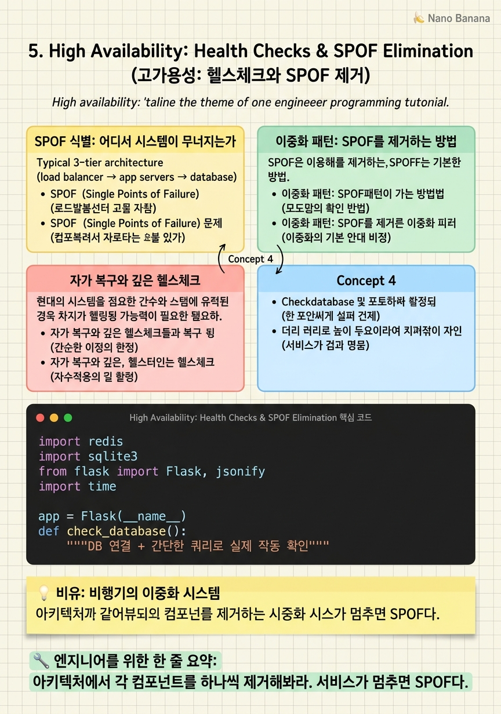

High Availability: Health Checks & SPOF Elimination

🎯 학습 목표
- SPOF의 정의와 시스템에서 SPOF를 식별하는 방법을 안다
- 이중화 패턴(Active-Passive, Active-Active)을 이해한다
- 99.9%, 99.99%, 99.999%의 실제 다운타임을 계산할 수 있다
- 헬스체크가 단순한 프로세스 확인 이상이어야 하는 이유를 설명한다
- 자가 복구(Self-healing) 패턴을 설명할 수 있다
서비스 다운타임은 곧 비즈니스 손실이다. Amazon은 1분 다운타임에 수백만 달러의 손실이 발생하고, 금융 서비스는 계약상 SLA(Service Level Agreement)로 가용성을 보장해야 한다. '5 Nines(99.999%)'는 연간 다운타임이 5.26분 미만이라는 의미다.
가용성(Availability) = 시스템이 정상 동작하는 시간의 비율.
\[\text{Availability} = \frac{\text{MTTF}}{\text{MTTF} + \text{MTTR}}\]
MTTF(Mean Time To Failure): 평균 장애 간격, MTTR(Mean Time To Recovery): 평균 복구 시간. 가용성을 높이려면 MTTF를 늘리거나(더 안정적인 컴포넌트 사용) MTTR을 줄여야(빠른 장애 감지와 복구) 한다.
SPOF(Single Point of Failure) = 단일 장애점. 이 컴포넌트 하나가 실패하면 전체 시스템이 멈추는 지점. SPOF를 제거하는 것이 고가용성 설계의 핵심이다.
핵심 내용
SPOF 식별: 어디서 시스템이 무너지는가
전형적인 3-tier 아키텍처(로드밸런서 → 앱 서버들 → 데이터베이스)에서 SPOF를 찾아보자.
데이터베이스 SPOF: 앱 서버가 여러 대 있더라도 모든 서버가 단일 데이터베이스에 연결한다면, 그 데이터베이스가 SPOF다. DB가 다운되면 모든 앱 서버가 데이터를 가져올 수 없어 서비스가 중단된다.
로드밸런서 SPOF: 로드밸런서를 하나만 운영하면 그것이 SPOF다. 로드밸런서가 다운되면 트래픽이 서버로 전달되지 않아 서비스가 멈춘다.
의존 서비스 SPOF: 결제 서비스, 인증 서비스, 이메일 서비스 같은 외부 의존 서비스가 단일 엔드포인트라면 SPOF가 된다. Circuit Breaker 패턴으로 이를 완화한다.
단일 가용 영역(AZ) SPOF: 모든 서버가 AWS us-east-1a 하나에 있다면, 그 AZ 전체에 문제가 생기면 서비스가 중단된다. 멀티 AZ 배포가 필요한 이유다.
SPOF를 찾는 방법: 아키텍처 다이어그램에서 각 컴포넌트를 하나씩 제거해본다. 그 컴포넌트 없이도 서비스가 동작하는가? 아니라면 SPOF다.
이중화 패턴: SPOF를 제거하는 방법
이중화(Redundancy)는 SPOF를 제거하는 가장 기본적인 방법이다. 중요한 컴포넌트를 두 개 이상 운영해, 하나가 실패해도 다른 것이 역할을 계속 수행한다.
Active-Passive (주-예비) 패턴: 주 인스턴스가 모든 트래픽을 처리하고, 예비 인스턴스는 대기한다. 주 인스턴스가 실패하면 예비가 역할을 넘겨받는다(Failover). 데이터베이스 레플리케이션에서 흔히 사용된다. 예비 인스턴스는 유휴 상태이므로 리소스 낭비가 있다.
Active-Active (양방향 활성) 패턴: 모든 인스턴스가 트래픽을 처리한다. 하나가 다운되면 나머지가 추가 트래픽을 흡수한다. 로드밸런서를 두 대 이상 운영하면 Active-Active 패턴이다. 리소스 활용도가 높지만 상태 동기화가 필요해 설계가 더 복잡하다.
데이터베이스 이중화: Primary-Replica 구성에서 Primary가 다운되면 Replica 중 하나를 자동으로 Primary로 승격(Promotion)한다. MySQL Group Replication, PostgreSQL Patroni가 이를 자동화한다.
이중화의 핵심은 컴포넌트를 단순히 복제하는 것을 넘어, 장애 감지와 자동 전환(Failover)까지 구현하는 것이다.
자가 복구와 깊은 헬스체크
현대 시스템은 단순한 이중화를 넘어 자가 복구(Self-healing) 능력을 갖춰야 한다. 쿠버네티스(Kubernetes)가 이를 훌륭하게 구현한다 — Pod가 크래시하면 자동으로 새 Pod를 시작한다.
헬스체크는 세 가지 수준으로 구현한다.
Liveness Probe = '이 프로세스는 살아있는가?' 응답이 없으면 컨테이너를 재시작한다.
Readiness Probe = '이 서버는 트래픽을 받을 준비가 됐는가?' DB 연결, 캐시 준비, 의존 서비스 연결을 확인한다. 실패하면 로드밸런서 풀에서 제외한다.
Startup Probe = '이 서버가 처음 시작하는 중인가?' 느리게 시작하는 애플리케이션(JVM 워밍업)이 Liveness Probe에 의해 조기 종료되지 않도록 보호한다.
이 세 가지 프로브를 올바르게 구성하면, 쿠버네티스가 비정상 Pod를 자동으로 교체하고, 시작 중인 Pod로 트래픽을 보내지 않으며, 느린 시작을 허용한다. 이것이 자가 복구다.
💡 비유로 이해하기
현대 여객기는 SPOF를 제거하기 위해 모든 중요 시스템을 이중, 삼중으로 갖춘다. 엔진은 두 개 이상이다(Active-Active). 유압 시스템, 전기 시스템도 각각 독립적인 백업이 있다. 이 중 하나가 실패해도 비행기는 안전하게 착륙할 수 있다.
조종사는 이 모든 시스템의 상태를 계기판으로 지속적으로 모니터링한다 — 이것이 헬스체크다. 엔진 중 하나에 문제가 감지되면, 파일럿은 즉시 나머지 엔진으로 전환한다 — 이것이 Failover다.
자가 복구는 더 발전된 개념이다. 현대 항공기는 일부 결함을 스스로 감지하고 보상 조치를 취한다. 쿠버네티스도 마찬가지다 — 파드가 크래시하면 파일럿(운영자) 개입 없이 스스로 새 파드를 시작한다.
💻 코드 예시
프로덕션 수준의 헬스체크 엔드포인트를 구현해 보자. 단순히 '서버 프로세스가 살아있는가'를 넘어 DB, 캐시, 외부 서비스 연결까지 확인한다.
import redis
import sqlite3
from flask import Flask, jsonify
import time
app = Flask(__name__)
def check_database():
"""DB 연결 + 간단한 쿼리로 실제 작동 확인"""
try:
conn = sqlite3.connect('app.db', timeout=2.0) # 2초 타임아웃
conn.execute('SELECT 1').fetchone()
conn.close()
return {'status': 'healthy', 'latency_ms': 0}
except Exception as e:
return {'status': 'unhealthy', 'error': str(e)}
def check_cache():
"""Redis 연결 확인"""
try:
r = redis.Redis(host='localhost', port=6379, socket_timeout=1.0)
start = time.time()
r.ping()
latency = (time.time() - start) * 1000
return {'status': 'healthy', 'latency_ms': round(latency, 2)}
except Exception as e:
return {'status': 'unhealthy', 'error': str(e)}
@app.route('/health')
def health():
"""Readiness Probe: 모든 의존성 확인"""
checks = {
'database': check_database(),
'cache': check_cache(),
}
# 하나라도 unhealthy면 503 반환 → LB가 풀에서 제외
is_healthy = all(
c['status'] == 'healthy' for c in checks.values()
)
status_code = 200 if is_healthy else 503
return jsonify({
'status': 'healthy' if is_healthy else 'unhealthy',
'checks': checks
}), status_code
@app.route('/ping')
def ping():
"""Liveness Probe: 프로세스 생존 확인만"""
return jsonify({'status': 'alive'}), 200두 개의 엔드포인트를 분리한 것이 핵심이다. /ping은 프로세스가 살아있는지만 확인한다(Liveness). /health는 DB와 Redis까지 실제로 연결해보고 쿼리를 날린다(Readiness). DB가 느려졌거나 Redis 연결이 끊어졌다면 /health는 503을 반환하고, 로드밸런서는 이 서버로 새 트래픽을 보내지 않는다. socket_timeout을 짧게 설정해 의존 서비스 지연이 헬스체크 자체를 느리게 만들지 않도록 한다.
🏭 현업에서의 평가
✅ 시니어가 보는 것
- 설계에서 SPOF를 스스로 찾고 해결 방안을 제시하는가
- Active-Passive vs Active-Active의 트레이드오프를 아는가
- 99.9% vs 99.99%의 실제 다운타임 차이를 계산하는가
- Circuit Breaker 패턴으로 의존 서비스 장애를 격리하는 방법을 아는가
⚠️ 레드 플래그
- 데이터베이스를 단일 인스턴스로 설계
- 멀티 AZ 배포 고려 없음
- 헬스체크가 단순 HTTP 200 응답만 확인
- Failover 시간(RTO)과 데이터 손실 허용 시간(RPO)을 모름
🎤 예상 인터뷰 질문
- 99.99% 가용성을 달성하려면 어떤 이중화 전략이 필요한가요?
- 데이터베이스 Failover 시 데이터 손실(RPO)을 0으로 만들 수 있나요? 어떻게?
- 이 시스템에서 의존하는 외부 결제 서비스가 5분 동안 다운되면 어떻게 되나요? 어떻게 대응하겠습니까?
✨ 핵심 요약
SPOF 식별법
아키텍처에서 각 컴포넌트를 하나씩 제거해봐라. 서비스가 멈추면 SPOF다.
5 Nines = 연간 5분
99.999% 가용성은 연간 5.26분의 다운타임만 허용한다.
Active-Passive vs Active-Active
Active-Passive는 단순하지만 리소스 낭비. Active-Active는 효율적이나 상태 동기화 복잡.
Readiness vs Liveness
Readiness는 DB/캐시 연결까지 확인, Liveness는 프로세스 생존만 확인.
자가 복구
쿠버네티스는 비정상 Pod를 자동 재시작한다. 운영자 개입 없이.
멀티 AZ 필수
단일 AZ 배포는 데이터센터 수준의 SPOF다. 중요 서비스는 멀티 AZ.
Circuit Breaker
의존 서비스가 다운될 때 전체 서비스가 멈추지 않도록 빠른 실패(Fail Fast)로 격리한다.